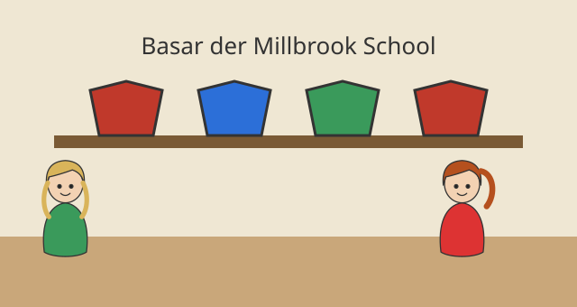
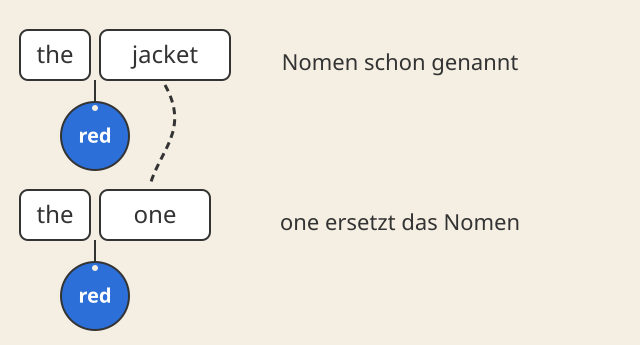

Nicht noch einmal das Nomen: one und ones
Mit einem KI-Tutor lernen
Ein KI-Tutor erklärt dir diese Seite und hilft dir bei den Aufgaben. Wähl deinen Assistenten:
Mit Claude öffnen Mit ChatGPT öffnen Mit Mistral Vibe öffnen
Du nutzt dein eigenes Konto beim Anbieter. Der Assistent ist kein Angebot von lernapps.net: lernapps liefert nur Inhalte und Aufgaben. Die Wahl gilt für alle Seiten, nur auf diesem Gerät.
Was du schon weißt

Von links: Sophie und Ellie.
Quelle: eigene Zeichnung. Lizenz: CC-BY-4.0.Aufgabe
Lösung
vor dem Nomen house richtige Antwort
Der blaue Adjektiv-Anhänger hängt vor dem Nomen.
hinter dem Nomen house
Im Englischen steht das Adjektiv nie hinter dem Nomen, ein Satz wie a house big ist falsch.
Er hängt nur nach be.
Nach be hängt er auch, aber vor einem Nomen ebenso.
Vor dem Nomen oder nach be.
Der Basar-Chat
Sophie und Ellie sortieren am Freitagnachmittag die Spenden für den Schulbasar. Dabei chatten sie mit dem Handy. Lies den Chat ganz. Die Zeilen sind nummeriert.
1 · Ellie: Wow, look at all these jackets! Which one do you like?
2 · Sophie: I like the red one, but the blue one is cheaper.
3 · Ellie: Are the old ones for sale already?
4 · Sophie: Yes. The new ones stay in the box until Saturday.
5 · Ellie: I need a bag for the books. Is there a big one?
| Englisch | Deutsch |
|---|---|
| for sale | zu verkaufen |
| already | schon |
| until | bis |
| box | Kiste |
6 · Sophie: Here is a small one. And there is a green one under the table.
7 · Ellie: The green one is perfect! Do we have any more of these?
8 · Sophie: Only red ones, I think. Maybe Amir has some more at home.
9 · Ellie: Good idea! I will ask him. And let's put a price on every single thing.
10 · Sophie: OK. Two pounds for a small one, five pounds for a big one!
| Englisch | Deutsch |
|---|---|
| price | Preis |
| pound | Pfund (Geld) |
| single | einzeln |
| maybe | vielleicht |
Hast du den Chat verstanden?
Aufgabe
Lösung
Richtige Antwort: Die Aussage stimmt nicht.
Die blaue Jacke ist billiger, sagt Sophie in Zeile 2.
Aufgabe
Lösung
Zeile 4: The new ones stay in the box until Saturday. richtige Antwort
Hier steht, wie lange die neuen Sachen in der Kiste bleiben.
Zeile 3: Are the old ones for sale already?
Diese Zeile fragt, ob die alten Sachen schon verkauft werden.
Zeile 8: Only red ones, I think.
Hier geht es um die roten Taschen, die noch fehlen.
Die neuen Sachen bleiben laut Zeile 4 bis Samstag in der Kiste.
Schau in den Text
Sophie sagt in Zeile 2: „I like the red one.“ Sie meint die rote Jacke. Das Wort jackets hat Ellie in Zeile 1 schon genannt, darum wiederholt Sophie es nicht. Stattdessen steht one. Der blaue Anhänger red bleibt hängen, nur das Nomen fehlt. In der Mehrzahl heißt es ones (Zeile 4: the new ones).

Der blaue Anhänger bleibt hängen, one nimmt den Platz des Nomens ein.
Quelle: eigene Zeichnung. Lizenz: CC-BY-4.0.| Mit Nomen | Mit one |
|---|---|
| the sweet apple | the sweet one |
| two warm scarves | two warm ones |
| this chair | this one |
Merke
one ersetzt ein Nomen in der Einzahl, das schon genannt ist, ones in der Mehrzahl. Der blaue Anhänger bleibt davor hängen: the red one. Ein einzelnes Adjektiv geht nicht, nicht „I want the blue“, sondern „I want the blue one“. Das gilt nur für Nomen, die du zählen kannst.
| Englisch | Deutsch |
|---|---|
| pullover | Pullover |
| scarf | Schal |
| cup | Tasse |
| shoes | Schuhe |
| broken | kaputt |
| thick | dick |
| phone | Handy |
| yours | deins |
| prefer | lieber mögen |
| apple | Apfel |
| a few | ein paar |
Übung
Aufgabe
Wähle one oder ones.
Tipp
Einzahl oder Mehrzahl? Das Nomen, das du ersetzt, entscheidet.
- Ich mag die grüne Tasche. Die blaue ist zu klein. → I like the green bag. The blue … is too small.
- Das sind meine alten Schuhe. Ich will neue. → These are my old shoes. I want new ….
- Welches Buch willst du? Das dicke. → Which book do you want? The thick ….
Lösung
- I like the green bag. The blue one is too small.
- These are my old shoes. I want new ones.
- Which book do you want? The thick one.
Aufgabe
Schreibe den Satz auf Englisch.
Tipp
Das Nomen ist schon genannt. Ersetze es mit one oder ones.
- Welchen Pullover möchtest du? Den roten.
- Ich habe große Tassen. Hast du kleine?
- Der alte Tisch ist kaputt, aber der neue ist gut.
Lösung
- Which pullover do you want? I want the red one. (auch richtig: Which pullover do you want? I would like the red one.; Which pullover do you want? I'd like the red one.; Which pullover do you want? the red one.; Which pullover would you like? I want the red one.; Which pullover would you like? I would like the red one.; Which pullover would you like? I'd like the red one.; Which pullover would you like? the red one.; Which jumper do you want? I want the red one.; Which jumper do you want? I would like the red one.; Which jumper do you want? I'd like the red one.; Which jumper do you want? the red one.; Which jumper would you like? I want the red one.; Which jumper would you like? I would like the red one.; Which jumper would you like? I'd like the red one.; Which jumper would you like? the red one.; Which one do you want? I want the red one.; Which one do you want? I would like the red one.; Which one do you want? I'd like the red one.; Which one do you want? the red one.; Which one would you like? I want the red one.; Which one would you like? I would like the red one.; Which one would you like? I'd like the red one.; Which one would you like? the red one.)
- I have big cups. Do you have small ones? (auch richtig: I have big cups. Have you got small ones?; I have large cups. Do you have small ones?; I have large cups. Have you got small ones?)
- The old table is broken, but the new one is good.
Aufgabe
In jedem Satz steckt ein Fehler. Schreibe den Satz richtig.
Tipp
Ein einzelnes Adjektiv und a mit ones gehen nicht.
- I like the red.
- She has a red ones.
Lösung
- I like the red one. (auch richtig: I like the red ones.)
- She has a red one. (auch richtig: She has red ones.)
Aufgabe
Schreibe den Satz auf Englisch.
- Die blauen Schuhe sind billiger als die grünen.
- Ich will keinen kleinen, ich will einen großen.
Lösung
- The blue shoes are cheaper than the green ones. (auch richtig: The blue shoes are cheaper than green ones.)
- I do not want a small one, I want a big one. (auch richtig: I don't want a small one, I want a big one.)
Aufgabe
Hör zu und schreibe, was du hörst.
- KI
- KI
- KI
Lösung
- Do you like the yellow ones?
- My old phone is broken, so I need a new one.
- The small cups are cheaper than the big ones.
Selbst sagen und schreiben
Aufgabe
Hör zu, sprich nach und nimm dich auf. Vergleiche dann mit dem Original.
Tipp
Hör den Satz zuerst. Sprich dann langsam nach.
- Which one is yours?KI
- I prefer the white ones.KI
- We have a few more black ones.KI
Zum Aufnehmen braucht diese Aufgabe JavaScript. Die Beispiele kannst du auch ohne anhören.
Lösung
- Which one is yours?
- I prefer the white ones.
- We have a few more black ones.
Offene Aufgabe
Du hilfst beim Basar und beschreibst deinen Freunden, was du kaufen willst, ohne ein Nomen zu wiederholen. Schreibe drei bis fünf Sätze mit one oder ones.
Eine gute Antwort enthält:
Lösung
I want a warm scarf. The grey one is nice, but the blue one is cheaper. I will take two thick ones for my brother.
Wie es weitergeht
Der Basar sammelt Geld für ältere Menschen aus der Stadt. Die Schulzeitung will darüber berichten. Im Artikel steht ein Adjektiv ganz allein, ohne Nomen und ohne one. Auf der nächsten Seite findest du heraus, was es bedeutet.
Fehler gefunden oder eine Idee für diese App?